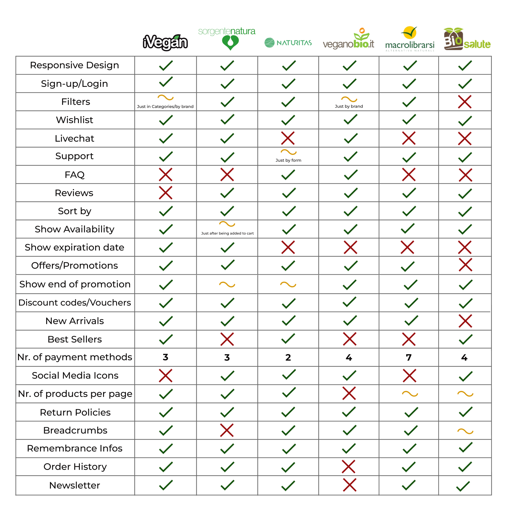
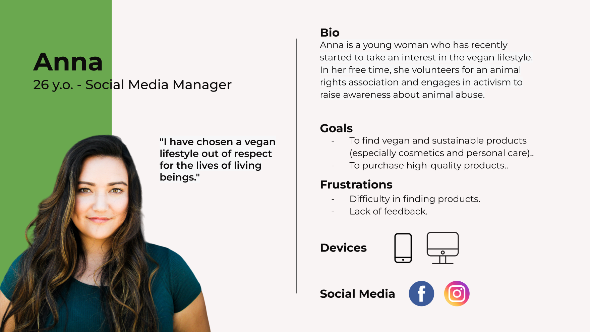
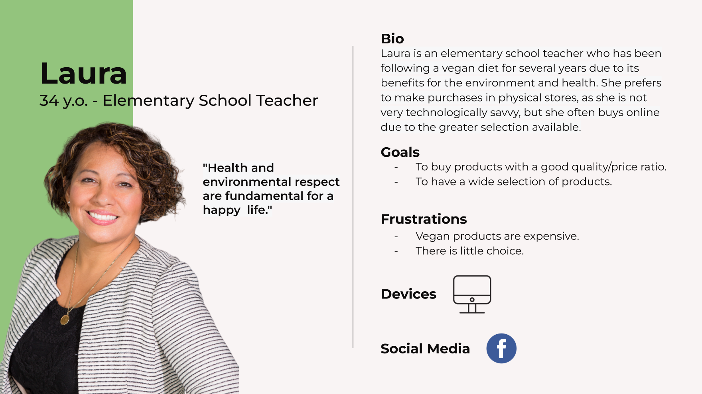
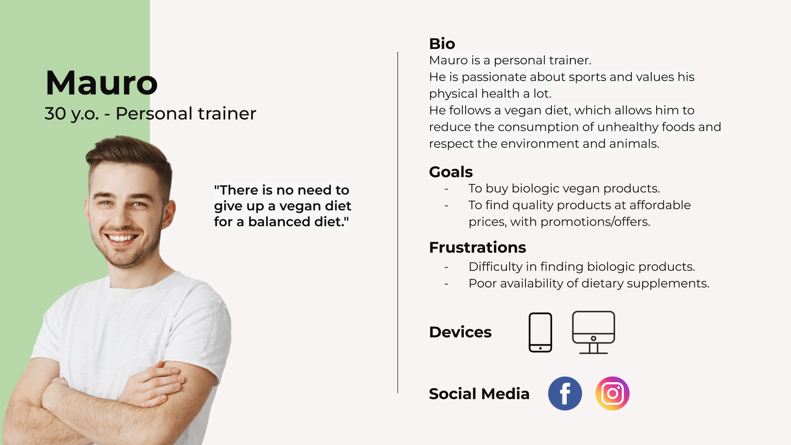
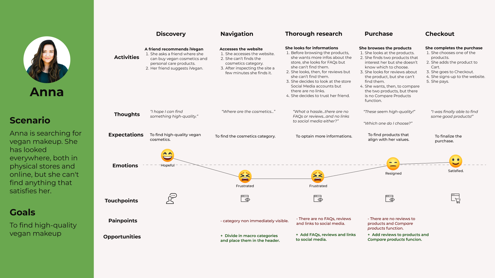
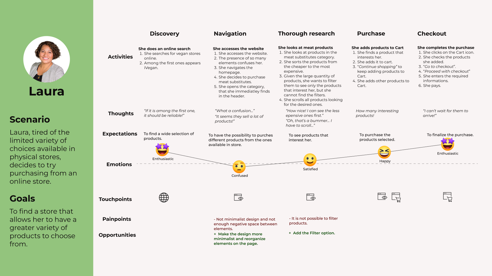
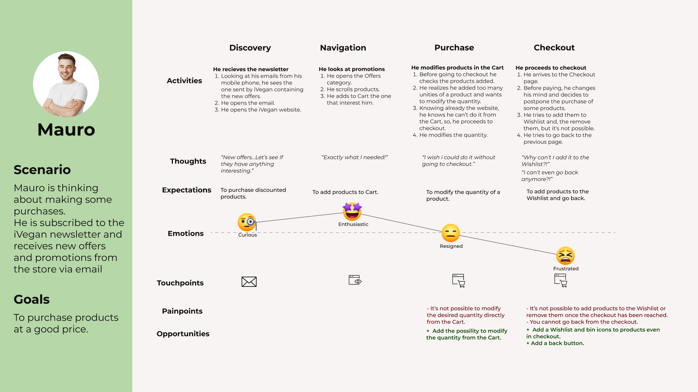

Redesign
No-profit Organization
A redesign of SochiDogs’s website, an international no-profit organization dedicated to saving abandoned and stray dogs worldwide.

A redesign of SochiDogs’s website, an international no-profit organization dedicated to saving abandoned and stray dogs worldwide.
Sochi Dogs is an international non-profit organization based in the United States that is dedicated to saving abandoned and stray dogs worldwide. The organization is committed to providing them with a better future by finding them new families through the adoption program.
User and Market Research, Wireframing, UI Design, User Testing.

To determine whether the current desktop and mobile versions of the website comply with usability and functionality criteria, an analysis was conducted using Nielsen's 10 heuristics. This allowed me to identify the strengths and weaknesses of SochiDogs website.
The website is generally usablebut there are several aspects that need improvement in order to provide an optimal user experience.
The site is not fully accessible, as it does not comply with WCAG 2.1 accessibility guidelines (e.g., insufficient contrast between page titles and background, missing alt attributes for images).
Overall, the website would benefit from improvements in terms of accessibility, visual design, and user experience to enhance user satisfaction and make it more aligned with current standards.
To determine thestrengths and weaknessesof the SochiDogs website compared to other non-profit organizations that focus on animal rescue and adoption, a comparative analysis was conducted with 5 of its direct competitors.
The direct competitors are represented by non-profit organizations that are involved in international animal rescue and adoption.
From the analysis, the differences that the SochiDogs website presents compared to the other analyzed websites have emerged.
Strengths: Clear and comprehensive information about adoptions and the adoption process.
Weaknesses: Lack of breadcrumbs, low-quality images, lack of filters on the adoption page, no information about the budget or finances, absence of privacy policy and terms and conditions pages.
From web and social media research, it emerges that the target audience consists of animal lovers of various ages. However, since the organization operates internationally, the target is highly diversified geographically and culturally.
To gain a better understanding of the target audience, I have designed a 10-question survey aimed at gathering quantitative and qualitative information. The survey focuses on their level of technological and web knowledge and their opinions regarding features and aspects commonly found on websites.
To select participants in line with SochiDogs' target audience, I have utilized social media groups for animal lovers and animal adoption. This approach allowed me to gather information from individuals who demonstrate a strong interest in animal welfare and are active online.
The survey was created using Google Forms and received 16 responses.

The majority of participants have an intermediate level of technological proficiency (31%) and use the web daily (75%). The most important aspects of a website for them are a professional appearance and ease of use. They consider filters to be very important, and the financial balance/report is also considered important.
With the data optained from the research and survey, i was able to create three Personas representing three different user groups, with different expectations, needs and goals.
  I created a User Journey Map to identify the pain points and feelings the user may go through while using the current website and the possible improvement opportunities.
  Starting with mobile wireframes, I sketched out the designs on paper.
Then, I moved on to creating digital wireframes, choosing a screen size of 320x568px for mobile to ensure optimal design for smaller-sized devices, and 1280x720px for desktop. I established a grid and a typographic scale. To maintain consistency in the design, I used multiples of 8 for spacing between elements.
Based on the findings from the discovery phase, I made modifications and implemented design and functionality to address the identified pain points.
I have created a UI Kit containing design specifications such as colors, typography, icons, grid, spacing, buttons, cards, media, and input fields.
The colors used in the website design were selected from the branding to maintain consistency. The primary accent color chosen is orange, a color that stands out well within the site and highlights the main CTAs.
The selected font is Google's Inter font, which is simple, versatile, and has good readability even on small screens.
I will conduct an unmoderated 5-second test to assess the comprehension of the "Above the fold" section of the homepage and the organization's activity, as well as an unmoderated Usability Test.
Both tests will be conducted to gather both quantitative and qualitative data, evaluating the website's understandability at first glance and identifying user navigation patterns and the ability to complete tasks through clicks and heatmaps.
Quantitative data will be based on the completion success rate of a task: Direct Success (participant successfully completes the task by reaching the required page directly), Indirect Success (participant completes the task by reaching the required page through an alternative path), and Task Abandoned (participant is unable to complete the task).
Qualitative data will be obtained from the 5-second test and the questions asked at the end of the test.
The test will be conducted using the UserBerry testing tool, which allows me to test the Figma prototype.
With the help of clicks and heatmaps, I obtained insights on user flow and website navigation.
The desktop version of the prototype will be analyzed as it provides a larger screen size, making it easier to identify pain points during the testing process.
The test will be conducted with 5 participants who are dog lovers and have a medium to high level of technological proficiency. These participants will be selected after completing a screening test to ensure they align with the organization's target audience.
Hello! My name is Arianna, and I'm working on redesigning a website.
I'm looking for participants for a usability session to gather feedback on the design and functionality.
The activity will be conducted online and will last a maximum of 15 minutes.
If you're interested, please read the description at the following link and fill out the short questionnaire.
Selected participants will receive a €10 Amazon voucher at the end of the session.
Thank you for your availability!
(open-ended questions to avoid getting participants who are not in line with the target)
Hi!
The test will be about the website of an organization. The session will last a maximum of 15 minutes.
This is not a test about you, but about the product I will show you. There are no right or wrong answers, in fact, your honest opinion will be of great help in improving the product. Thank you for taking the time to participate in this test.
Enjoy the test!
Observe the screen that will be shown to you. *Userberry displays the Homepage screen for 5 seconds*
Questions:
In this phase, I will give you a scenario and tasks to perform on the website.
Scenario:Imagine you are a person interested in adopting a dog. You have heard about the organization and their commitment to rescuing stray dogs and finding them a new home. You have decided to visit the Sochi Dogs website to learn more and find a suitable dog for your family.
Please note that since the website is a prototype, not all parts are functional, so don't worry if clicking on something doesn't result in any action. Focus only on the final action.
Also, remember that this is not a test of you, but of the product I will show you. There are no right or wrong answers.
Task 1:Find information about the cost of adoptions.
Task 2:Adopt Byron.
Task 3:Make a donation to SochiDogs.
5-second Test:
Answers:
Answers:
Answers:
Answers:
Qualitative data: Most of the participants correctly identified the activity carried out by the organization. The first thing they noticed when looking at the homepage was the image in the hero section, although one participant noticed the primary CTAs first. The logo went unnoticed, so the participants did not learn the brand name. The text in the hero section was also not noticed much, but the positioning of the dog with its gaze directed towards the text will draw the user's attention to the CTA.
Tasks:
Quantitative data:All participants were able to successfully complete the task directly, easily finding and accessing the page containing adoption information.
Quantitative data:All participants completed the task directly, easily finding the dog and the CTA to adopt it.
Quantitative data:Most of the participants completed the task directly, immediately locating the "Donate" button at the top right of the Navbar and accessing the donation page. Only one participant completed the task indirectly, accessing the donation page through the "Get Involved" page.
Final questions:
Answers:
Answers:
Answers:
Qualitative data:
The design and functionality of the website were understood and appreciated, being considered clear and simple.
The service inspired trust and reliability in the participants, being perceived as professional and inviting.
I made the logo in the Header larger to make it more noticeable, and I used the version with the gradient branding to make it stand out even more.
Additionally, I modified the copy in the Hero section, changing it to "SochiDogs is rescuing dogs in Ukraine" instead of "We are rescuing dogs in Ukraine" to make the brand name more prominent.